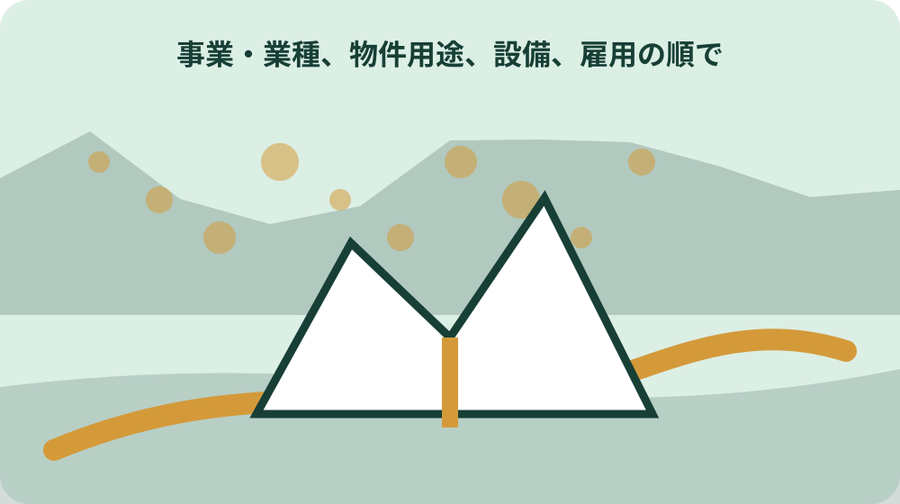
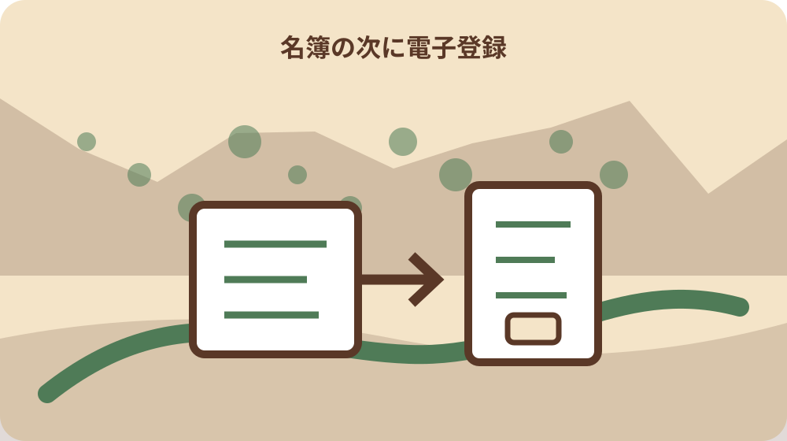

先に結論を確認する
この記事の答え：受注希望を建設工事、測量・建設コンサルタント等、物品製造等へ区分し、該当年度の定期または随時受付で資格審査を申請します。名簿登載を確認し、建設工事等の電子案件なら森町の利用届・登録番号による電子入札利用者登録も別に行います。
森町で最初に照合する条件：受注希望内容を建設工事、測量・建設コンサルタント等、物品製造等のどの区分で申請するか、町の手引と追加項目一覧で確認する。
結論は資格区分・受付・名簿・電子登録を四段階で管理する
森町の入札参加準備は、申請書を送れば終わる一つの手続ではありません。社内の参加経路票を四段にし、第一段へ資格区分、第二段へ定期または随時受付、第三段へ資格者名簿の登載確認、第四段へ対象案件の電子入札利用者登録を置きます。各段に根拠ページ、担当者、期限、完了証拠を記します。
森町公式案内では、建設工事、測量・建設コンサルタント等、物品製造等の三種類について、必要書類を提出し、審査を受け、資格者名簿へ登録される必要があります。会社が受注したい仕事を最初にどこへ分類するかで、手引、様式、受付時期、有効期間が変わります。会社業種の呼称だけで区分を決めません。
名簿への登載と、電子入札システムの利用は別の段階です。森町は建設工事と建設工事関連業務委託の対象案件で電子入札を実施しています。別の県内発注者ですでに同じ共同システムを使っていても、森町へ参加するには森町のシステム利用届が必要だと案内されています。
この四段表の目的は、参加できるという早い結論ではなく、どこまで確認できたかを示すことです。資格申請済み、審査中、名簿登載済み、電子登録済み、個別公告の条件確認済みを別の状態にします。一つでも未確認なら次の確認先を記し、営業担当と申請担当が同じ進捗を見られるようにします。
受注したい仕事から三つの申請区分を選ぶ
最初に案件名ではなく、提供する仕事の中身を書き出します。施工、測量、設計、調査、保守、物品納入などを一行ずつ分け、森町が公開する三つの申請区分の手引へ照合します。『建設会社だから建設工事』のように会社全体で一括せず、参加を希望する業務ごとに必要な申請区分を確かめます。
建設工事、測量・建設コンサルタント等、物品製造等には、それぞれ申請の手引、申請様式、チェックリスト、追加項目一覧があります。標準様式が共通でも、町が求める追加項目や添付資料まで同一とは限りません。ファイル名に区分と対象年度を付け、別区分のチェックリストを混ぜません。
複数区分へ申請する場合は、代表者、本店、受任先、使用印、連絡先など共通項目を横に並べます。表記が異なる箇所は、単なる揺れか、委任関係の違いかを確認します。資格名簿へ載る名称と電子入札で使う情報が一致するよう、会社情報の基準表を作り、担当ごとの手入力差を減らします。
区分に迷う業務は、過去案件の名前だけで判断しません。予定する役務の範囲を短く整理し、財政課契約管財係へどの区分の手引を使うか確認します。回答日、部署、説明した業務範囲を経路票へ残します。後で業務内容が変わったら、以前の回答をそのまま流用せず再確認します。

定期受付と随時受付の違いを日付で残す
受付は『今申請できるか』だけでなく、いつ資格が始まり、いつ満了するかまで確認します。定期受付には定められた期間があり、随時受付は定期後に案内されます。随時申請の有効期間は認定日から始まり、満了日は定期申請者と同じです。提出日を資格開始日とみなさず、認定日を別欄へ置きます。
森町公式ページでは、建設工事は2025年4月1日以後に随時受付し、随時資格は認定日から2027年3月31日までと案内されています。物品製造等も2025年4月1日以後に随時受付ですが、満了は2028年3月31日です。同じ受付開始日でも有効年度が違うため、区分別に記録します。
測量・建設コンサルタント等の2026・2027年度定期受付は2026年2月2日から27日までで、町内に本店または営業所がある者には開始日の特例があります。随時受付は4月1日以後です。過去の期限を例として固定せず、申請する年度に公式ページを開き直し、必着表記と一時受付中止期間を確認します。
営業計画では、参加したい公告日から逆算しても認定時期が間に合うとは限りません。町は随時申請の受付を案内していますが、提出即日で名簿登載されるとは書いていません。書類準備、補正、審査、認定、名簿反映、電子登録の時間を分け、特定案件へ間に合う保証を自社で作りません。
手引・標準様式・追加項目を一組でそろえる
森町は全種類で総務省作成の標準様式を活用し、最初に標準様式の記載要領を確認するよう案内しています。ただし標準様式だけを入手して提出一式が完成したとは判断しません。区分別の手引、町の追加項目一覧、使用印鑑届、誓約書、チェックリストを同じ取得日の組として保存します。
作業フォルダーには『公式原本』『入力中』『提出版』『補正版』を分けます。公式原本へ直接上書きすると、様式の元の項目や取得時点が分からなくなります。提出版には対象年度、区分、提出日、版番号を付けます。複数人で編集する場合は、一人を最終確認者にし、古い添付書類が残っていないかをチェックリストで照合します。
申請書の会社情報は、登記事項、許可・登録、納税関係、委任先などの証拠資料と照合します。単に前年ファイルを複製せず、変更の有無と証明書の有効時点を確認します。森町ページは変更届が必要な事項と添付書類も示しているため、申請時の基準表を作れば、認定後の変更管理にも同じ情報を使えます。
標準様式と町独自項目の意味が分からない場合、空欄のまま提出して補正を待つより、手引の問い合わせ先へ確認します。質問票には様式名、シート名、項目名、会社の状況、考えている記載方法を書きます。回答は自社の入力判断欄へ置き、公的な記載要件と社内の作業メモを混ぜません。
提出方法と必着日を区分ごとに確認する
建設工事と物品製造等について、森町は郵送または信書便での提出を案内し、持参は町内に本店または営業所等を有する者に限るとしています。測量・建設コンサルタント等も郵送等の案内に加え、2026・2027年度分から電子申請が始まりました。会社に都合のよい方法を全区分へ一律適用しません。
郵送する場合は、発送日ではなく必着か消印有効かを公式案内で確認します。宛先、担当係、正本部数、ファイル綴じ、返信用資料の要否を手引へ照合します。追跡番号は発送証拠であって審査完了証拠ではありません。到達後の不足連絡に対応できる担当者と連絡先を経路票へ記します。
電子申請では送信ボタンを押した時刻だけで完了とせず、受付通知、申請番号、送信した添付ファイルを保存します。紙と電子のどちらでも、提出版の内容を同じフォルダーへ固定します。電子で送った後にローカルファイルを修正すると、行政が見ている版と社内が見ている版がずれるためです。
期限間際に提出方法を変えると、押印、添付形式、原本、送達日などの条件が変わる可能性があります。最初に区分別の提出方法を決め、やむを得ず変更する場合は手引と窓口で再確認します。担当者の不在も考え、社内締切を公式締切より前へ置き、発送・送信後の確認日まで予定化します。
審査から名簿登載までを申請済みと混同しない
森町公式ページが示す資格審査の流れは、申請、欠格要件の調査、建設工事では総合点数と必要な格付け、不認定者への通知、名簿登録へ進みます。申請書を提出した状態は、名簿へ載った状態ではありません。社内システムの表示も『申請済み』と『資格確認済み』を別にします。
森町の案内では、参加資格を有しないと認定された者にのみ不認定通知書を発行するとされています。通知が届かないことだけを名簿登載の証拠にせず、町が公開する資格者名簿で区分、会社名、委任先等を照合します。名簿の公表時点と自社の認定時点がずれる場合は担当係へ確認します。
随時申請では資格の開始が認定日です。提出日や郵便到達日を開始日に置き換えると、公告参加の社内判断を誤ります。認定日の確認方法、名簿反映日、資格満了日を一組で記録します。資格の有無だけでなく、参加したい案件の公告で追加条件がないかを別に確認します。
不足や補正の連絡を受けたら、求められた資料、連絡日、提出期限、補正版、再提出日を残します。電話口で直した内容を提出版へ反映せずに終えると、翌年度の申請にも誤りが残ります。審査の回答と自社解釈を分け、担当者交代後もなぜ修正したかを追えるようにします。
公開名簿で区分・名称・有効期間を照合する
森町は建設工事、測量・建設コンサルタント等、物品製造等を分けて資格者名簿を公開しています。名簿確認時は検索で会社名が見つかっただけで終えず、区分、商号、所在地または受任先、対象期間を申請控えと比べます。同名会社や表記差を避けるため、法人番号等の確認可能な識別情報も社内側で持ちます。
名簿ファイルには公表日または取得日を付けます。随時認定直後に最新ファイルへ反映されていない可能性があれば、古い名簿にないことを不認定と決めません。逆に過去年度名簿に載っていることを現年度資格の証拠にもしません。ページに示された有効期間と対象年度を読んでから照合します。
会社名、代表者、所在地、受任者、許可・登録等が変わった場合、森町は変更届と添付書類を案内しています。公開名簿と現況に差があれば、単なる表示遅れか未届かを確認します。営業資料だけを更新して資格情報を放置せず、変更発生日、届出期限、提出日、名簿反映確認を管理します。
名簿の写しは営業担当が案件を探すための一覧にもなりますが、個別入札の参加保証ではありません。公告ごとに業種、格付け、所在地、実績、技術者などの条件が設定される場合があります。名簿登載は入口、公告条件確認は案件ごとの次工程として、チェック票を分けます。
電子入札は資格申請後の別登録として進める
森町は静岡県共同利用電子入札システムを用い、2020年12月15日執行分から電子入札を利用すると案内しました。対象は建設工事と建設工事関連業務委託の一般競争または指名競争入札です。物品製造等の資格申請があることを理由に、すべての入札が同じ電子手順だとは判断しません。
電子入札の準備は、参加者向け資料と森町電子入札運用基準の確認、機器やICカードの準備、森町へのシステム利用届、利用者登録番号通知、システムでの利用者登録という順です。各工程の完了証拠を残し、ICカードを取得しただけ、または県内他団体で登録しただけで森町登録済みにしません。
森町公式案内は、静岡県や県内市町の発注でシステムを利用している場合でも、森町への参加にはシステム利用届が必要と明記しています。共同システムという名称から自治体間で自動共有されると推定せず、発注者別の利用登録を確認します。過去に森町の登録番号交付を受けた場合の扱いも現行案内で確認します。
静岡県共同利用電子入札ポータルサイトは、初めて利用する人向けの案内とシステム入口を提供します。ブックマークはログイン画面だけでなくポータル入口へ置き、障害情報、稼働時間、利用環境、操作案内を確認できるようにします。森町独自の運用基準と共同システムの技術案内を両方保管します。

ICカード・利用届・登録番号を順番に管理する
電子入札に用いるICカードは、会社の委任関係や名簿情報と整合するよう準備します。カード名義、取得者、保管責任者、有効期限、利用端末を台帳へ記録し、個人の机や一台のパソコンだけに情報を閉じません。更新時期を資格満了日と混同せず、カード側の期限を別に通知します。
森町へ出すシステム利用届には、返信用封筒の添付など公式案内に示された準備があります。返信先の住所と会社名は資格審査申請で登録されたものを使うよう案内されています。委任がある場合は受任先との整合を確認し、資格名簿と違う表記を便宜上使いません。
森町は利用届から利用者登録番号通知書の送付まで2日から3日程度かかると案内しています。この日数を常に保証される最大日数とは解釈せず、郵送、休日、不備、社内回覧を含めて早めに手続します。通知書を受け取った日、番号、登録作業日、作業結果を経路票へ記録します。
利用者登録後は、本番案件の前に端末、ブラウザー、ICカード読取、通知先メール、担当者権限を確認します。接続できることと入札操作を正しく完了できることは同じではありません。説明資料を読み、社内で締切時刻、代理対応、障害時の連絡先を共有します。暗証情報は通常の文書台帳へ平文で書きません。
変更届と資格満了を年間予定へ組み込む
資格取得後も、会社情報が変われば変更届の確認が必要です。森町公式ページは、法人の本店住所、商号、代表者、許可・登録、受任者、営業所情報などについて、変更届と添付書類を案内しています。登記変更が終われば自動で町名簿も変わるとは考えず、変更事実を資格管理担当へ連絡します。
変更台帳には、変更日、対象区分、変更項目、必要書類、証明書取得日、町への提出日、電子入札情報の変更要否、名簿反映確認日を置きます。複数区分へ登録している会社は、一つの届出で全区分が更新されるかを確認します。受任先の変更ならICカードや利用者情報との整合も見直します。
資格満了日は区分によって異なります。建設工事、測量・建設コンサルタント等、物品製造等を同じ更新年だと決めず、名簿の有効期間を年間予定へ登録します。町公式ページの更新を定期的に確認し、定期受付の公表を待つ担当者と、証明書や決算資料を準備する担当者を分けます。
廃業、合併、営業譲渡、会社分割など通常の項目変更を超える場合は、森町公式案内が事前相談を促す事項もあります。前年の変更届様式へ当てはめず、契約管財係へ状況と予定日を説明します。資格の承継や再申請を自社で断定せず、公的回答と専門家の会社法上の助言を分けて記録します。
大石の視点：発注者別の参加経路票を一枚にする
ここからは森町の公的要件そのものではなく、大石の実務上の提案です。参加経路票の最上段に発注者名を置き、森町、森町水道事業、袋井市森町広域行政組合などを同じ『森町関係』でまとめません。資格名簿、電子登録、公告確認を発注者ごとに分けると、別名簿を流用する誤りを防げます。
森町公式案内では、袋井市森町広域行政組合発注の建設工事等へ参加するには袋井市の登録名簿が必要で、森町名簿だけでは資格が認められません。この公的事実を経路票の分岐条件にします。一方、社内の色分けや担当割当は大石の提案であり、町が指定する様式ではないことを明記します。
経路票には『根拠URL』『取得日』『社内判断』『行政確認』を別欄にします。公式ページを読んだ結果と、会社がどの案件を狙うかという営業判断を混ぜないためです。受注見込みが低いという私見で必要な更新を止めず、資格維持の判断は費用、実績、対象案件、社内体制をそろえて責任者が決めます。
もう一つの提案は、完了証拠を言葉で統一することです。申請控え、到達記録、認定日確認、名簿写し、登録番号通知、利用者登録完了画面を段階別に決めます。『手続済み』という曖昧な報告をやめれば、営業担当は何が足りないかを見て、資格担当へ具体的に依頼できます。
案件参加前に公告条件と社内担当を再確認する
資格名簿と電子登録が整っても、個別案件へ自動的に参加できるわけではありません。公告や指名通知で、対象業種、格付け、地域要件、実績、技術者、提出書類、質問期限、入札時刻を確認します。資格経路票の末尾に案件別チェック票へのリンクを置き、常設資格と案件条件を混ぜません。
案件担当者は、公告に記された発注者名を最初に読みます。袋井市森町広域行政組合のように別名簿が必要な発注者を、所在地や名称の印象で森町案件と扱わないためです。公告URL、公告日、案件番号、質問先を記録し、古い保存PDFではなく公表中の公式資料と差分がないか確認します。
入札直前には、ICカード有効期限、端末、担当者、送信期限、積算版、添付ファイル、代理対応を二人で確認します。技術上の問題が起きた際の連絡先と記録方法も決めます。ただし社内チェックは森町の運用基準を変更するものではありません。公的手順を先に置き、社内手順はその実行漏れを防ぐ補助とします。
受付年度、様式、名簿、有効期間、電子入札の利用環境は更新されます。本稿の過去日付を次回申請の締切として使わず、森町の資格審査申請ページ、資格者名簿ページ、電子入札案内、静岡県共同利用電子入札ポータルを申請時に開き直してください。最終的に不明な点は財政課契約管財係へ確認し、回答日と前提を残します。